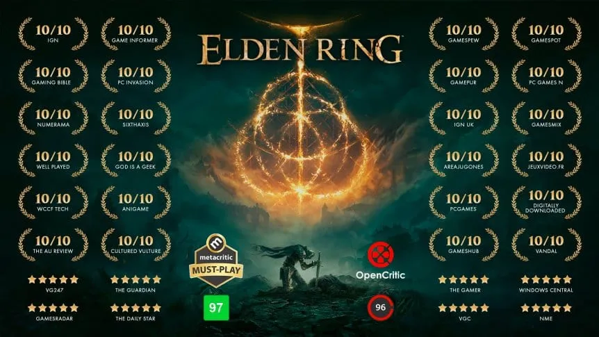
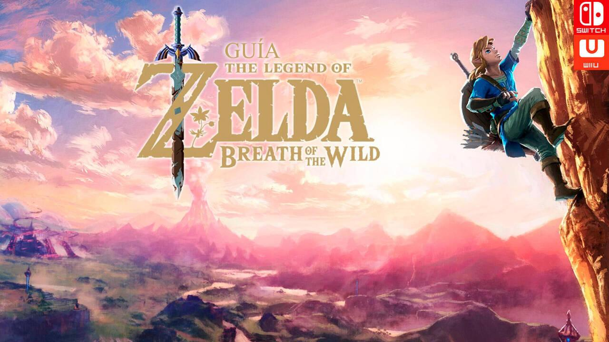

Los mejores ganadores del GOTY
Elden Ring (2022)
Elden Ring llevó la fórmula de los Souls a un mundo abierto inmenso y lleno de secretos. No hay marcadores que te digan a dónde ir: vos elegís el camino. Cada colina, cueva, castillo o pantano esconde algo que descubrir, y cada enemigo te puede destruir si no aprendés a jugar con paciencia. Su historia, escrita junto a George R. R. Martin (autor de Game of Thrones), se siente misteriosa, épica y trágica. Es un juego que premia la curiosidad, la exploración y la determinación. Para muchos, una obra maestra moderna.
The Legend of Zelda: Breath of the Wild (2017)
Breath of the Wild redefinió el concepto de mundo abierto. Todo lo que ves, podés explorarlo. Subís montañas, planeás por el cielo, cocinás, hacés experimentos con físicas, resolvés santuarios y enfrentás jefes a tu manera. No te obliga a seguir una ruta: vos decidís cómo vivir la aventura. Su estilo artístico, música minimalista y libertad total lo convirtieron en un juego inolvidable. Es el título que marcó una nueva era para Nintendo y para el gaming en general.
The Witcher 3: Wild Hunt (2015)

The Witcher 3 es un RPG adulto, crudo y lleno de decisiones difíciles. Acompañás a Geralt, un cazador de monstruos, en busca de Ciri, mientras te enfrentás a guerras, traición, amor y pérdida. Lo que hizo a este juego legendario fue la calidad de su narrativa: incluso las misiones secundarias tienen historia, significado y consecuencias. Los personajes se sienten vivos, el mundo es inmenso y la banda sonora es épica. Uno de los RPG más influyentes de la historia.
Overwatch (2016)

Overwatch revolucionó los shooters multijugador combinando acción con personajes llenos de personalidad. No gana el que dispara mejor, sino el equipo que combina habilidades y roles: tanques que protegen, supports que curan, asesinos que eliminan objetivos. Cada héroe tiene su estilo propio, desde un ninja cibernético hasta una gorila científica con un cañón de rayos. Fue un juego que unió comunidades, impulsó esports y marcó una moda completa de hero shooters.
God of War (2018)

God of War reinventó a Kratos. Pasó de ser pura furia a ser un padre que intenta controlar sus demonios internos. La historia gira alrededor del viaje de Kratos y Atreus, y cada diálogo, combate y decisión construye su relación. El sistema de combate es profundo y pesado, la cámara sin cortes hace que todo se sienta más cercano, y la mitología nórdica le da un aire misterioso y épico. Es un juego que mezcla acción brutal con una historia emocional fuerte: una verdadera obra maestra narrativa.